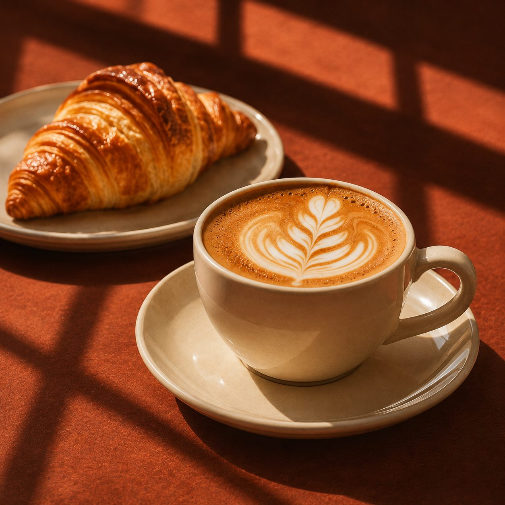
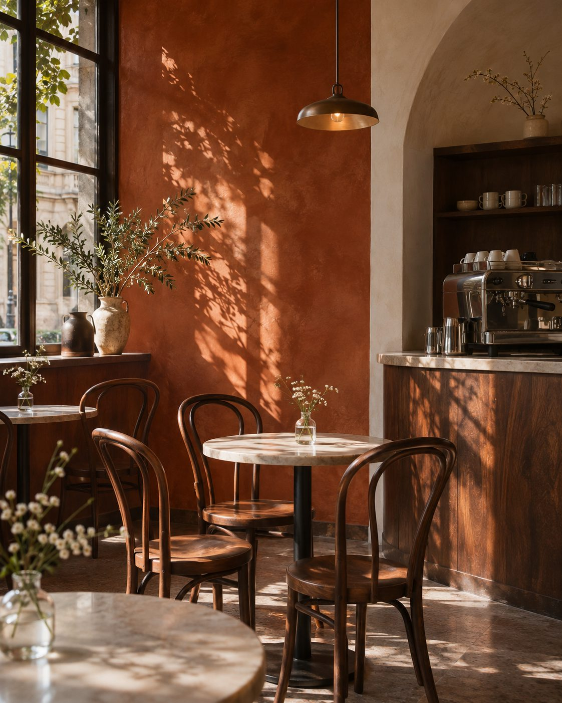

Кофе и
свежая
выпечка
Смотреть меню

О кофейне
Загляните за первой чашкой по дороге на работу или возьмите кофе и круассан на прогулку.
Как нас найти
Как нас
найти
- Адрес
- Брусничный Берег, Кленовая улица, 12
- Часы работы
- Пн–Пт 08:00–20:00
Сб–Вс 09:00–21:00 - Электронная почта
- hello@coffee.example